SYMPATHETIC ACTIVATION
(FIGHT OR FLIGHT)
Alertness
Stress response
Heart rate increase
Energy mobilization
Why They Matter for Balance, Recovery, and Daily Function.
The autonomic nervous system (ANS) and the vagus nerve form a brain–body communication network that supports homeostasis, recovery, and adaptive function.
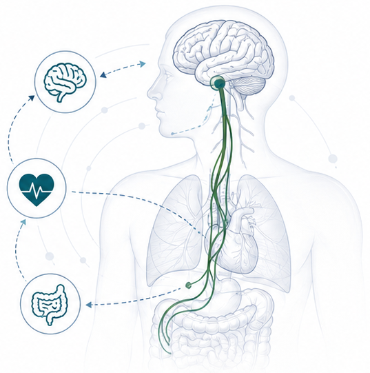
Dynamic balance between sympathetic and parasympathetic activity supports stability and physiological harmony.
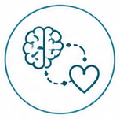
The vagus nerve is a primary pathway for bidirectional signaling between the brain and multiple organs and systems.
Vagal activity promotes stress recovery, immune regulation, and greater resilience to physical and mental challenges.
Healthy autonomic regulation supports sleep, energy, digestion, focus, and overall performance in everyday life.
Two branches maintain dynamic physiological balance.
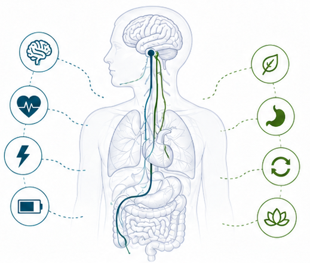
Alertness
Stress response
Heart rate increase
Energy mobilization
Rest
Digestion
Recovery
Restoration
A major parasympathetic pathway linking the brain and multiple organs.
Carries signals between the brain and organs to coordinate function.
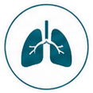
Supports steady, efficient breathing and respiratory balance.
Helps regulate immune responses and reduce excess inflammation.
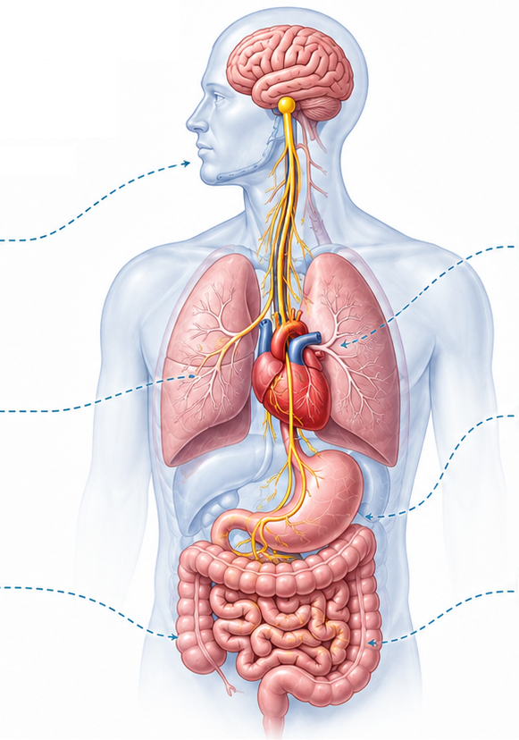
Slows heart rate and supports cardiovascular balance.
Facilitates two-way communication between the gut and brain.
Promotes rest, recovery, and parasympathetic dominance.
Healthy autonomic–vagal regulation supports recovery and adaptive health.
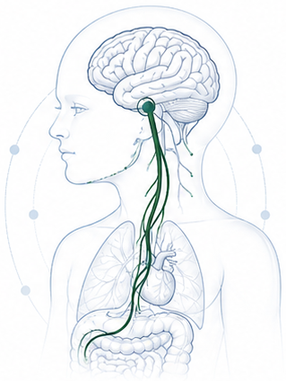
Higher vagal activity is associated with faster recovery from stress and greater return to baseline.
Vagal tone supports emotion regulation and balanced responses to everyday challenges.
Higher vagal activity is associated with improved sleep quality and more restorative sleep.
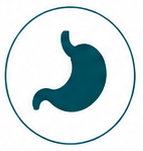
Vagal activation supports healthy gut function and motility, promoting digestive comfort.
Higher vagal activity is associated with healthier heart rate variability and cardiovascular balance.
Stronger vagal function is associated with better adaptation to stress and greater long-term resilience.
Persistent imbalance can affect both mental and physical function.
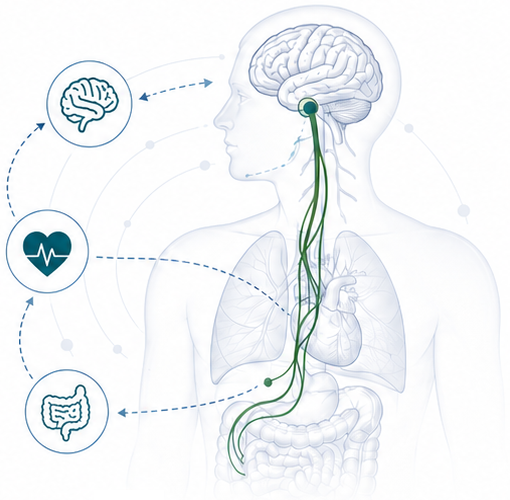
Sustained activation of stress responses can strain the nervous system and body.
Poor sleep quality or quantity impairs recovery and increases physiological stress.
Heightened worry, muscle tension, and nervous system hyperarousal.
Low energy, mental fatigue, and prolonged recovery after stress or exertion.
Bloating, discomfort, or irregular digestion due to autonomic imbalance and reduced gut function.
Chronic low-grade inflammation linked to increased risk of illness and slower healing.
Lower ability to adapt to stress, recover, and maintain physical and mental performance.
Evidence-informed concepts for interpreting autonomic and vagal function.
Associations, not causation.
The body maintains internal balance through dynamic regulation.
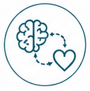
Neural pathways integrate signals between the brain and body systems.
Adaptive responses help the body respond and recover.
Individual biology, lifestyle, and environment shape regulation needs.
Small, consistent adjustments support long-term resilience.
Often estimated by HRV, which is influenced by breathing, posture, and measurement methods; it is a research proxy, not a direct measure of “vagal strength”.
A practical pathway for supporting recovery, resilience, and daily function.
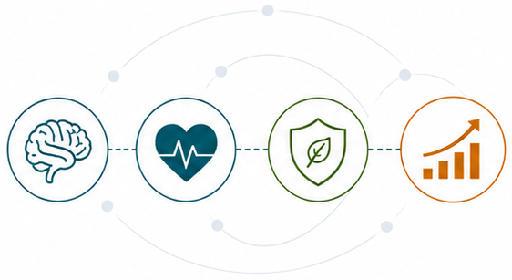
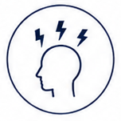
Lower triggers and stressors that strain the nervous system.
Encourage balance between sympathetic activation and parasympathetic regulation.
Support vagal activity and autonomic flexibility across organs and systems.
Better adaptation, health, and performance in everyday life.
POSITIVE FEEDBACK LOOP